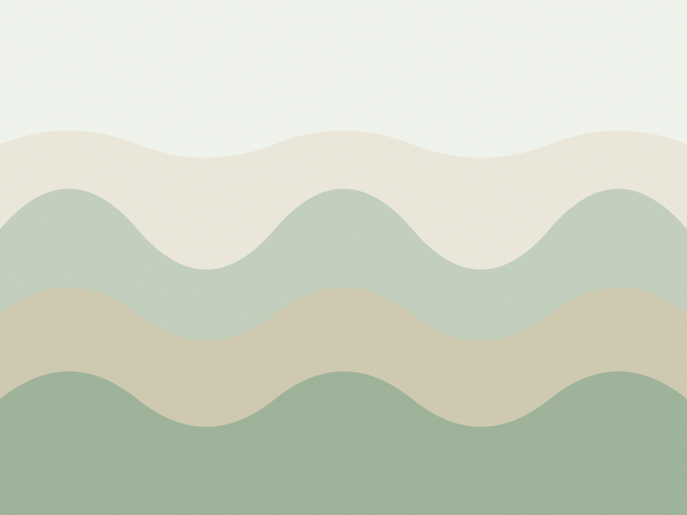

Hatha iniciante
Postura sustentada por três a cinco respirações, com bloco e cinta quando o quadril ou o ombro não chegam. Sequência igual durante o mês inteiro, para você acompanhar a própria evolução.
Com Clara · nível de entrada
Jardins · 7h e 19h
Aulas de sessenta minutos na Alameda Lorena, 1.142. Os últimos dez são de respiração sentada, com cobertor nos joelhos. Turma fechada em doze pessoas e uma aula avulsa custa R$ 45.

Cada aula tem um nível de entrada. Se é a sua primeira vez, comece pelo hatha de terça ou pela restaurativa de sábado.
Postura sustentada por três a cinco respirações, com bloco e cinta quando o quadril ou o ombro não chegam. Sequência igual durante o mês inteiro, para você acompanhar a própria evolução.
Com Clara · nível de entrada
Uma postura puxa a outra na cadência da respiração. Turma para quem já tem quatro meses de prática: aqui a saudação ao sol aparece em ritmo contínuo, sem pausa explicada.
Com Iara · intermediário
Quatro posturas no chão, cada uma de oito a doze minutos, com bolster e dois cobertores. Quase não há movimento: o trabalho é ficar e respirar.
Com Clara · qualquer nível
Respiração quadrada, contagem de quatro e escuta do som da sala. Senta em almofada, banco ou cadeira. Sem postura de pé e sem suor.
Com Tomás · qualquer nível
A porta abre vinte minutos antes. Domingo não tem aula, e a sala fica aberta das 8h às 10h para prática livre com inscrição na véspera.
| Dia | Manhã | Noite | Duração |
|---|---|---|---|
| Segunda | sem aula | Vinyasa · 19h | 60 min |
| Terça | Hatha · 7h | sem aula | 60 min |
| Quarta | Respiração · 7h30 | Vinyasa · 19h | 30 e 60 min |
| Quinta | Hatha · 7h | sem aula | 60 min |
| Sexta | sem aula | Vinyasa · 19h | 60 min |
| Sábado | Restaurativa · 9h | sem aula | 75 min |
| Domingo | prática livre | fechado | 120 min |
Cheguei com o ombro travado de passar o dia no computador. Em três meses de hatha, duas vezes por semana, eu já levantava o braço sem puxar o pescoço. Não foi alongamento milagroso: foi repetir a mesma sequência até o corpo entender.
Renata Kfouri, 38 anos, arquiteta. Pratica desde agosto de 2022.
Vim pela respiração de quarta e fiquei pelo vinyasa. O Tomás explica o que a contagem faz no corpo antes de mandar fechar o olho, e isso me deixou à vontade.
Paulo Sérgio Arruda, 56 anos, técnico de som. Pratica desde 2023.
A restaurativa de sábado virou o meu compromisso da semana. Setenta e cinco minutos deitada e eu saio como se tivesse dormido oito horas.
Eliane Prado, 44 anos, professora de história. Pratica desde 2021.